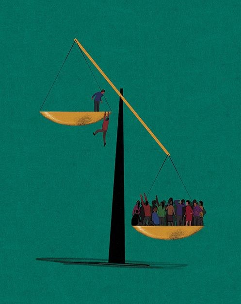

¿Alguna vez escuchaste hablar sobre el impuesto a la pobreza? Este concepto trata de una problemática social que atraviesan los barrios vulnerables hoy en día, y quiere decir que las personas de bajos recursos pagan más que el resto por los mismos bienes y servicios.
Esto genera un círculo vicioso en donde nunca el dinero es suficiente y siempre se está en “falta”.
Te lo ilustramos con un ejemplo: los distribuidores de alimentos no llegan a las villas y/o barrios populares, por lo que aquel que vende comida allí debe trasladarse, en un auto que no tiene conseguir los productos, y eso se ve reflejado en el precio final. En conclusión , el coste por falta de acceso termina en un precio más caro para los habitantes de esta población. El impuesto a la pobreza pasa a ser de un 20% o hasta un 45% más caro que en barrios con mayores recursos.
¿De dónde surge este problema? se debe a la falta de acceso logístico qué hay en la distribución de barrios, junto con el rol de los intermediarios locales y los monopolios.
Desde Bindi nos proponemos repensar estos sistemas que no están funcionando para hallar alternativas que den nuevos resultados. Dejar de segregar a los barrios vulnerables y reconocer que somos todos parte de lo mismo, entonces, ¿cómo podemos trabajar juntxs para que el mundo sea mejor y más justo para todxs?
Visibilizar estas cuestiones nos permite reflexionar y tomar rumbos diferentes con nuestras acciones.